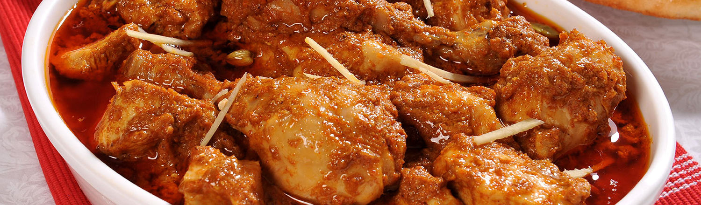

Saketh
Web developer
Main
Food
Here, tasty curries and smooth gravy dishes are all made with fresh ingredients and a balance of aromatic earthy spices. It is difficult to describe the flavor of Indian food because it varies so much from dish to dish and region to region. In general, Indian food has strong flavors and is often spicy, sweet, smokey, and savory. While many Indian dishes are considered hot by western standards, there are also plenty of dishes that are mild. If you aren't a spice lover, you can also order the non-spicy versions of typically hot dishes. There is much more to the flavor of Indian food than just the heat!

If you can’t decide what you want most, why not choose one of our meal deals or special dinners. With great value for money as well as a varied choice of our tandoori dishes,traditional Indian curries,Murgy Masala,Set Meals you just can’t go wrong. With a variety of combinations including Chicken Omelette with chips,peas & green salad there’s something for everyone.
Taste Of India will always be offering great food at affordable prices. Please feel free to browse our new website and place your order online. Remember to register with our new online ordering site to get up to date prices and exclusive special offers, limited to our registered customers only!
Food is treated in a number of articles. For a description of the processes of absorption and utilization of food, see nutrition; nutrition, human; digestion; and digestive system, human. For information on the methods used to prepare raw foods for cooking, consumption, or storage, see food preservation.
Most food has its origin in plants. Some food is obtained directly from plants; but even animals that are used as food sources are raised by feeding them food derived from plants. Cereal grain is a staple food that provides more food energy worldwide than any other type of crop. Corn (maize), wheat, and rice – in all of their varieties – account for 87% of all grain production worldwide. Most of the grain that is produced worldwide is fed to livestock.Some foods not from animal or plant sources include various edible fungi, especially mushrooms. Fungi and ambient bacteria are used in the preparation of fermented and pickled foods like leavened bread, alcoholic drinks, cheese, pickles, kombucha, and yogurt.
Welcome to Taste Of India in Nottingham! Here at Taste Of India you can now order all your Favourite Biryani and other set meals online including a large choice of tandoori dishes, traditional Indian curries, Murgy Masala and Set Meals. That’s right! Taste Of India is the only tandoori dishes,traditional Indian curries,Murgy Masala,Set Meals shop that delivers in Nottingham – with us you can order a selection of food, all prepared and cooked by our highly trained staff.
At Taste Of India in Nottingham we have an extensive menu, catering for all tastes and preferences. If you’re in the mood for Tandoori dishes,Traditional Indian curries,Murgy Masala,Set Meals, we can provide you with good stuff every time to keep your belly and your taste buds satisfied.
At Taste Of India we are constantly striving to improve our service and quality in order to provide our customers with the very best fast food in Nottingham. We’ve now made it simple and easy for you to order food with us in Nottingham, whether you’re looking for fast food delivery or you want to collect your food piping hot and fresh from our kitchen. Our tandoori dishes, traditional Indian curries,Murgy Masala,Set Meals delivery service is available 6 days a week, ready to serve you a delicious meal every time.
nutrients used in the body of an organism to sustain growth and vital processes and to furnish energy. The absorption and utilization of food by the body is fundamental to nutrition and is facilitated by digestion. Plants, which convert solar energy to food by photosynthesis, are the primary food source. Animals that feed on plants often serve as sources of food for other animals. To learn more about the sequence of transfers of matter and energy in the form of food from organism to organism, see food chain.
Hunting and gathering, horticulture, pastoralism, and the development of agriculture are the primary means by which humans have adapted to their environments to feed themselves. Food has long served as a carrier of culture in human societies and has been a driving force for globalization. This was especially the case during the early phases of European trade and colonial expansion, when foods such as the hot red pepper, corn (maize), and sweet potatoes spread throughout Europe to Africa and Asia.